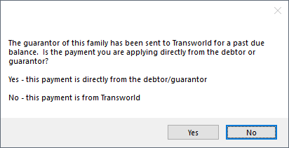
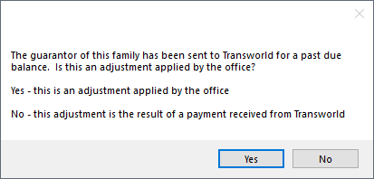

TSI Payments
When a payment is made to an account that is managed by TSI Collections services, enter the Payment in Open Dental as normal.
- Payments may be made to TSI, who then sends the payment to to be entered by the office.
- If a guarantor pays the office directly, payment can also be entered. The information is sent to TSI using the Open Dental Service at the regular sync time.
Note:
- It is recommended to create a Payment Type and Adjustment Type specific to TSI.
- Positive and negative adjustment information is sent to TSI using the OpenDentalService at regular sync time.
Payments made by TSI
When a patient pays TSI, TSI sends an invoice with payment to the office after collecting their portion.
- Go to the patient's Account.
- If the patient's balance was adjusted off using the Exclude Negative Adj Type set in TSI Setup, the balance must be adjusted back onto the account using the Exclude Positive Adj Type.
- Click Adjustment.
- There is a prompt to confirm if the adjustment is being applied by the office. Click Yes.
- Enter an adjustment amount that matches the payment amount.
- Select the Exclude Positive Adj Type from the Addition adjustments list.
- Click Save to create the adjustment.
- Click Payment. There is a prompt to determine if the payment was received from TSI or the patient 
- Select No to indicate the payment was made by TSI. This prevents a message about the payment from being sent to TSI.
- Enter the payment amount and complete the payment as usual.
- In the patient's account, click Adjustment. There is a prompt to determine if the adjustment is being applied by the office or is a result of payment from TSI.
- Click No to indicate the adjustment is being added as a result of payment received from TSI. This prevents a message about the adjustment from being sent to TSI.
- Add a subtraction adjustment reflecting the portion of the payment kept by TSI. The adjustment type used must not be excluded in TSI Setup. Complete the adjustment as usual.

Payments made by Patient (directly to office)
When a patient pays the office, a message is automatically sent to TSI. TSI then sends an invoice to the office.
Enter the Payment:
- Go to the patient's account.
- If the patient's balance was adjusted off using the Exclude Negative Adj Type set in TSI Setup, the balance must be adjusted back onto the account using the Exclude Positive Adj Type.
- Click Adjustment.
- There is a prompt to confirm if the adjustment is being applied by the office. Click Yes.
- Enter an adjustment amount that matches the payment amount.
- Select the Exclude Positive Adj Type from the Addition adjustments list.
- Click Save to create the adjustment.
- Click Payment. There is a prompt to determine if the payment was received from TSI or the patient.
- Click Yes to indicate the payment was received from the patient (or guarantor). This sends a message to TSI about the payment.
- Enter the full payment amount and complete the payment as usual.

Process TSI Invoice:
After message of the payment is sent to TSI, they send an invoice with information about TSI's portion of the payment. Follow the steps below after receiving the invoice:
- Go to the patient's account.
- Click Payment to enter TSI's portion. There is a prompt to determine if the payment was received from TSI or the patient.
- Click No to indicate the payment is from TSI.
- Enter the portion sent to TSI as a negative amount. (e.g., -100.00) Complete the payment as usual.
- In the patient's account, click Adjustments. There is a prompt to confirm if the adjustment is being applied by the office: 
- Click No to indicate the adjustment is being added as a result of a payment. This prevents a message about the adjustment from being sent to TSI..
- Add a subtraction adjustment reflecting the portion of the payment kept by TSI. The adjustment type used must not be excluded in TSI Setup. Complete the adjustment as usual.